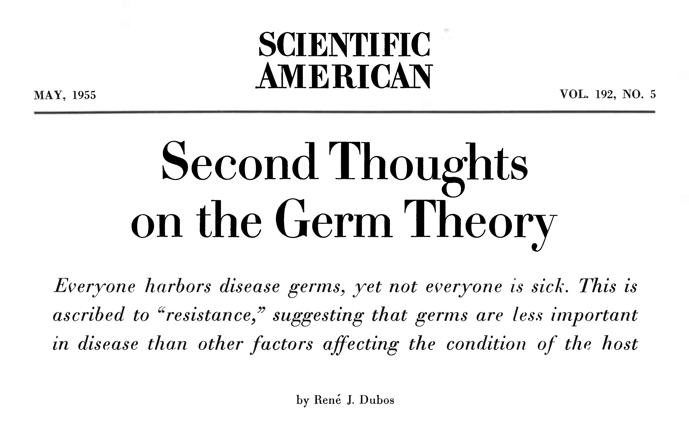
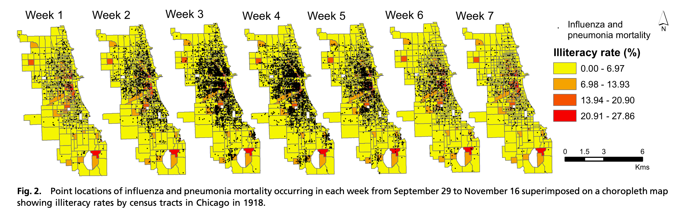
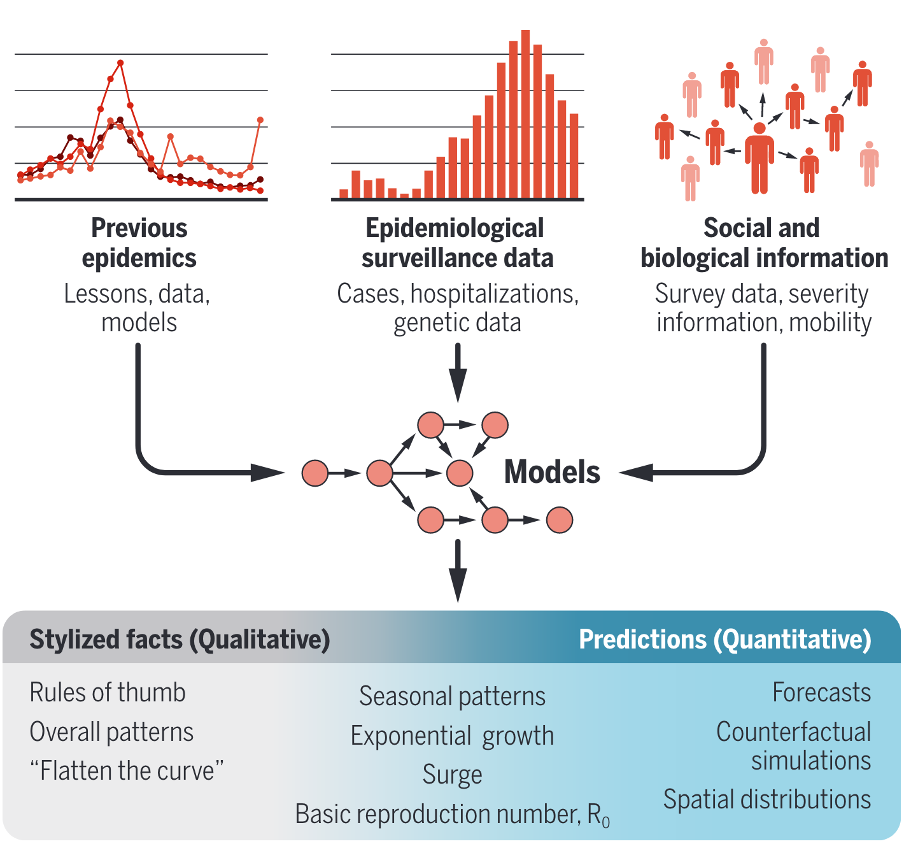
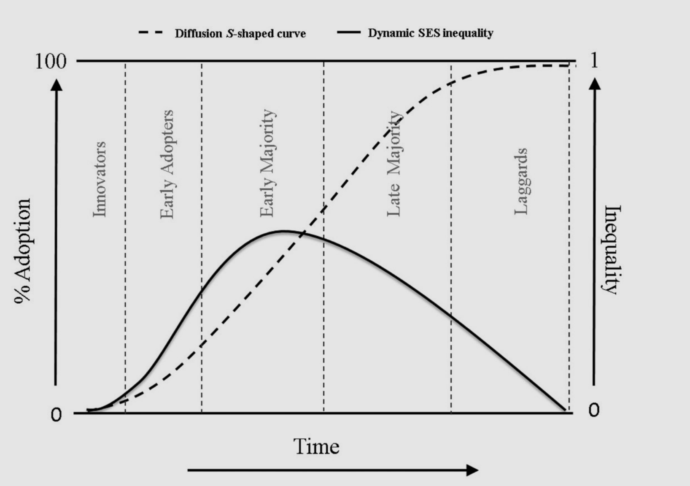
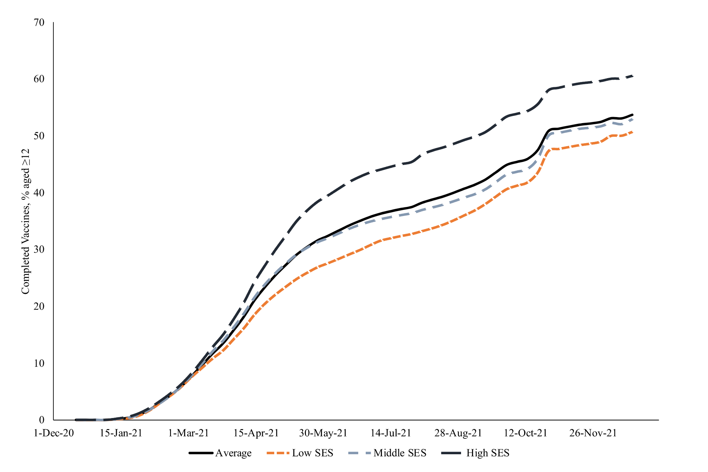
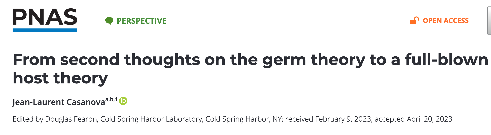

01:00
Modeling the fundamental causes of infection inequity
CDC Influenza Modeling Network Meeting
8/24/2023
Jon Zelner
jzelner@umich.edu
Dept. of Epidemiology
Center for Social Epidemiology and Population Health
University of Michigan School of Public Health
EpiBayes Research Group
epibayes.io


How do we make social mechanisms first-class components of transmission models?
COVID-19 disparities are not the fault of those who are experiencing them, but rather reflect social policies and systems that create health disparities in good times and inflate them in a crisis. The US must develop a new kind of “herd immunity,” whereby resistance to the spread of poor health in the population occurs when a sufficiently high proportion of individuals, across all racial, ethnic, and social class groups, are protected from and thus “immune” to negative social determinants.
From Williams & Cooper (2020): “COVID-19 and Health Equity—A New Kind of “Herd Immunity” (1)
Agenda
Overview of health equity efforts at CDC (Kelcie Landon)
What does it mean to make equity a first-class concern of models & modelers? (Jon Zelner, UM)
Estimating and projecting COVID-19 disparities at the sub-city level. (José Herrera, UT)
~45m for discussion
From social factors to social causes
TLDR
Why the fundamental social cause perspective is a powerful adjunct to mechanistic modeling.
Thinking through the implicaitons of a social causation framework for intervention and policy.
A very incomplete framework for equity-forward modeling.

There is nothing new under the sun ☀️
From Dubos (1955) (3)
During the COVID-19 pandemic, social causes of infection inequity were quickly identified

One of many examples of important insights that didn’t make it into early pandemic models. (4)
Historical analyses have repeatedly demonstrated how social structures drive infection inequities
Example of spatial and racial inequities in 1918 influenza mortality from (5)
A lack theory, intuition, data, and methods for anticipating and targeting inequity was a signal failure of preparedness.
Implications of COVID-19 modeling have been broad, shaping everything from intuition, to public policy and social discource (Figure from (6))
A very unpleasant thought experiment
In January 2024, a new viral respiratory pathogen for which there are no effective vaccines or therapeutics emerges.
Age-specific case-fatality rates are as-yet unknown.
It is unclear which non-pharmaceutical interventions will be effective for preventing transmission.
How to best manage infection in an acute-care setting is an open question.
Given these starting conditions, would you expect to see reduced inequity in infection and death as compared to COVID-19?
Structural determinants of unequal risk remain firmly in place
Occupational and residential segregation
Income and wealth inequality
Structural racism in public health, social policy, and medical practice
And too many other mechanisms to enumerate them all…

Fundamental cause theory (FCT) gives some insight into what makes social inequities in infection so persistent.
A fundamental cause is connected to inequity in outcomes through numerous intermediary mechanisms (7).
A fundamental cause drive inequity across multiple, diverse health outcomes.
New technologies cause may inequities to persist or grow if they diffuse through the population along existing socioeconomic structures.
Fundamental causes constrain access to flexible financial, social and material resources
Proposed fundamental causes include:
- Socioeconomic inequity
- Racism
- Residential segregation
- Social stigma
Effects may be correlated or overlapping, but each represents distinct mechanisms.
Fundamental causes such as racism are characterized by their pervasiveness and durability.

Theoretical diagram from (8) showing relationships between racism, socioeconomic inequity and racial inequity in disease outcomes.
FCT suggests there are diminishing returns to enumerating and attacking the mid-stream drivers of infection inequity

Flow diagram of connections between high-level, structural causes, intervening mechanisms, and downstream exposure risks, from (9)
FCT shows that innovation may result in increased inequity
Diffusion of a new medical innovation through a population (dashed line) along a gradient of socioeconomic inequity (solid line) (Figure from Zapata-Moya 2019 (10); see also (11))
How does this play out in the real world?
Work-from home and other NPIs are also public-health innovations drive inequity.

Proportion of SARS-CoV-2 deaths potentially averted in 2020 if all Michiganders experienced the same pacing of SARS-CoV-2 infection as Whites (From Naraharisetti et al., Under Review)
These patterns clearly in evidence during the roll-out of SARS-CoV-2 vaccine
High-SES counties were vaccinated faster, earlier, and more completely than lower-SES counties (From Clouston et al. 2023 (13))
How should we think about intervention in socio-epidemiological systems?
Epidemiologists and policymakers are used to developing and evaluating well-defined interventions.
‘Well-defined’ interventions follow SUTVA principles (14):
Modalities of intervention are as explicit as possible.
Direct effects of treatment are clearly identified.
Quantitative relationships between intervention and outcome are replicable across subjects and contexts.
Well-defined interventions are essential tools of effective public health and clinical medicine.
Leads us towards accurate estimates of vaccine effectiveness. üíâ
Measurement of the efficacy of antivirals and other therapeutics. üíä
Assessing direct and indirect impacts of non-pharmaceutical interventions1. üò∑
Can well-defined interventions remediate fundamental causes of infection inequity?
The only ‘well-defined intervention’ for racial disparities that can attack all of the pathways connecting structural racism to health inequity (as described by Richardson (16), with a healthy dose of irony)
Why are classically well-defined interventions limited tools for attacking the structural determinants of inequity?
Downstream factors addressed by well-defined interventions may be chasing a moving target (14,17).
Causal inference targeting the ‘closest possible world’ (18) biases towards conservative interventions.
An intervention framework assuming a tight connection between policy(makers) and discrete interventions may not be an appropriate frame for problems requiring collective action. (2,14)
An (incomplete) framework for equity-forward modeling
We all know that being ready for the next emergency is not optional.

So: What role can modelers play in redefining population immunity?
COVID-19 disparities are not the fault of those who are experiencing them, but rather reflect social policies and systems that create health disparities in good times and inflate them in a crisis. The US must develop a new kind of “herd immunity,” whereby resistance to the spread of poor health in the population occurs when a sufficiently high proportion of individuals, across all racial, ethnic, and social class groups, are protected from and thus “immune” to negative social determinants.
From Williams & Cooper (2020): “COVID-19 and Health Equity—A New Kind of “Herd Immunity” (1)
Re-orienting towards equity requires reframing our goals.
Highlight the role of structural factors in producing inequity without necessarily suggesting a specific intervention.
Target a broader array of stakeholders than classical policymakers and NGOs.
Accept greater statistical and epistemic uncertainty in linkages between discrete actions and outcomes, i.e. a stronger focus on qualitative insights.
Recognize the embeddedness of models and modelers in sociopolitical systems
Example framework from Williams et al. (19) situating models and modelers within a system of social relationships and constraints.
Treat social and economic policies as first-line epidemiological interventions.
Examining the impact of ending the CDC eviction moratorium on COVID-19 infection inequity requires accounting for multiple levels of transmission (Figure from (20))
Highlight the distributional implications of existing social inequities.

Example from Ma et al. (21) showing cumulative burdens of infection by race/ethnicity at a modeled herd immunity threshold for SARS-CoV-2
Pay explicit attention to the historical inequities that are already in every model.
When mathematical models are created to represent a particular time period in a defined population, history is incorporated through the initial conditions or the initial parameterization of the model[.]… This way of handling history is highly dependent on the quality and quantity of data available in the context being modeled. (22)
Modeling for equity requires risk-taking and creativity.
We must think beyond our training, statistical tests, and practices that dismiss methodologies that we may be unfamiliar with. There is scholarship being overlooked that proposes new approaches we could explore…, but we cannot move forward with capturing variables like structural racism if we do not explore our creativity. (Adkins-Jackson et al. 2021, (23))
This requires us to expand into new territory with a combination of curiosity and humility
We also want to underscore that a sociological imagination is accessible to all working epidemiologists: While engagement with the literature in social science and social epidemiology is key, the most essential thing is to adopt the “attitude of playfulness” that [pioneering social scientist C. Wright] Mills encouraged when connecting the dots from the structural to the personal.(Zelner et al. 2023, (17))
While paying attention to the balance between social and biological mechanisms as drivers of infection outcomes.
Casanova (24) points out ambiguities in Dubos’ ideas about ‘resistance’ and how modern immunology complicates simplistic ideas about the relationship between host and environment.
Estimating and projecting COVID-19 disparities at the sub-city level.
Discussion Questions
What are the conceptual gaps we need to fill to do a better job modeling for equity?
Who should be inside the modeling tent who isn’t right now?
How do we do this without falling into a trap of ever-escalating complexity?
What are the limitations of existing data sources? What data are needed?
How can we make a socio-structural approach work from within academia/govt/NGOs?
Thanks!
Please get in touch with any questions/thoughts/concerns at
jzelner@umich.edu.Check out our work at
epibayes.io.More resources on modeling infection inequity.
References
1.
Williams DR, Cooper LA. COVID-19 and Health Equity—A New Kind of “Herd Immunity.” JAMA [electronic article]. 2020;323(24):2478–2480. (https://doi.org/10.1001/jama.2020.8051). (Accessed February 2, 2021)
2.
Zelner J, Masters NB, Naraharisetti R, et al. There are no equal opportunity infectors: Epidemiological modelers must rethink our approach to inequality in infection risk. PLOS Computational Biology [electronic article]. 2022;18(2):e1009795. (https://journals.plos.org/ploscompbiol/article?id=10.1371/journal.pcbi.1009795). (Accessed February 16, 2022)
3.
Dubos RJ. Second Thoughts on the Germ Theory. Scientific American [electronic article]. 1955;192(5):31–35. (http://www.jstor.org/stable/24944640). (Accessed September 4, 2020)
4.
McClure ES, Vasudevan P, Bailey Z, et al. Racial Capitalism within Public Health: How Occupational Settings Drive COVID-19 Disparities. American Journal of Epidemiology [electronic article]. 2020;kwaa126. (https://academic.oup.com/aje/advance-article/doi/10.1093/aje/kwaa126/5866668). (Accessed July 15, 2020)
5.
Grantz KH, Rane MS, Salje H, et al. Disparities in influenza mortality and transmission related to sociodemographic factors within Chicago in the pandemic of 1918. Proceedings of the National Academy of Sciences [electronic article]. 2016;113(48):13839–13844. (http://www.pnas.org/lookup/doi/10.1073/pnas.1612838113). (Accessed December 15, 2019)
6.
Zelner J, Eisenberg M. Rapid response modeling of SARS-CoV-2 transmission. Science [electronic article]. 2022;376(6593):579–580. (http://www.science.org/doi/full/10.1126/science.abp9498). (Accessed May 11, 2022)
7.
Link BG, Phelan J. Social Conditions As Fundamental Causes of Disease. Journal of Health and Social Behavior [electronic article]. 1995;35:80. (http://www.jstor.org/stable/2626958?origin=crossref). (Accessed December 15, 2019)
8.
Phelan JC, Link BG. Is Racism a Fundamental Cause of Inequalities in Health? Annual Review of Sociology [electronic article]. 2015;41(1):311–330. (http://www.annualreviews.org/doi/10.1146/annurev-soc-073014-112305). (Accessed December 15, 2019)
9.
Noppert GA, Hegde ST, Kubale JT. Exposure, Susceptibility, and Recovery: A Framework for Examining the Intersection of the Social and Physical Environment and Infectious Disease Risk. American Journal of Epidemiology [electronic article]. 2022;kwac186. (https://doi.org/10.1093/aje/kwac186). (Accessed November 3, 2022)
10.
Zapata-Moya ÁR, Willems B, Bracke P. The (re)production of health inequalities through the process of disseminating preventive innovations: The dynamic influence of socioeconomic status. Health Sociology Review [electronic article]. 2019;28(2):177–193. (https://doi.org/10.1080/14461242.2019.1601027). (Accessed September 20, 2022)
11.
Clouston SAP, Rubin MS, Phelan JC, et al. A Social History of Disease: Contextualizing the Rise and Fall of Social Inequalities in Cause-Specific Mortality. Demography [electronic article]. 2016;53(5):1631–1656. (http://link.springer.com/10.1007/s13524-016-0495-5). (Accessed December 15, 2019)
12.
Clouston SAP, Rubin MS, Colen CG, et al. Social Inequalities in Suicide: The Role of Selective Serotonin Reuptake Inhibitors. American Journal of Epidemiology [electronic article]. 2014;180(7):696–704. (https://academic.oup.com/aje/article-lookup/doi/10.1093/aje/kwu191). (Accessed December 15, 2019)
13.
Clouston SAP, Hanes DW, Link BG. Social inequalities and the early provision and dispersal of COVID-19 vaccinations in the United States: A population trends study. Vaccine [electronic article]. 2023;41(36):5322–5329. (https://www.sciencedirect.com/science/article/pii/S0264410X23008332). (Accessed August 7, 2023)
14.
Schwartz S, Prins SJ, Campbell UB, et al. Is the “well-defined intervention assumption” politically conservative? Social Science & Medicine [electronic article]. 2016;166:254–257. (https://www.sciencedirect.com/science/article/pii/S0277953615301933). (Accessed August 14, 2023)
15.
Greenhalgh T. Miasmas, mental models and preventive public health: Some philosophical reflections on science in the COVID-19 pandemic. Interface Focus [electronic article]. 2021;11(6):20210017. (https://royalsocietypublishing.org/doi/10.1098/rsfs.2021.0017). (Accessed January 11, 2022)
16.
Richardson ET. Epidemic Illusions: On the Coloniality of Global Public Health. The MIT Press; 2020 (Accessed August 14, 2023).(https://direct.mit.edu/books/book/5030/Epidemic-IllusionsOn-the-Coloniality-of-Global). (Accessed August 14, 2023)
17.
Zelner J, Naraharisetti R, Zelner S. To make long-term gains against infection inequity, infectious disease epidemiology needs to develop a more sociological imagination. American Journal of Epidemiology [electronic article]. 2023;kwad044. (https://doi.org/10.1093/aje/kwad044). (Accessed February 27, 2023)
18.
Oakes JM, Kaufman JS, eds. Methods in social epidemiology. Second edition. San Francisco, CA: Jossey-Bass, A Wiley Brand; 2017.
19.
Williams TG, Brown DG, Guikema SD, et al. Integrating Equity Considerations into Agent-Based Modeling: A Conceptual Framework and Practical Guidance. Journal of Artificial Societies and Social Simulation [electronic article]. 2022;25(3):1. (https://www.jasss.org/25/3/1.html). (Accessed July 5, 2022)
20.
Nande A, Sheen J, Walters EL, et al. The effect of eviction moratoria on the transmission of SARS-CoV-2. Nature Communications [electronic article]. 2021;12(1):2274. (https://www.nature.com/articles/s41467-021-22521-5). (Accessed December 27, 2021)
21.
Ma KC, Menkir TF, Kissler SM, et al. Modeling the impact of racial and ethnic disparities on COVID-19 epidemic dynamics. eLife [electronic article]. 2021;10:e66601. (https://doi.org/10.7554/eLife.66601). (Accessed May 28, 2021)
22.
Abuelezam NN, Michel I, Marshall BD, et al. Accounting for historical injustices in mathematical models of infectious disease transmission: An analytic overview. Epidemics [electronic article]. 2023;43:100679. (https://www.sciencedirect.com/science/article/pii/S1755436523000154). (Accessed March 29, 2023)
23.
Adkins-Jackson PB, Chantarat T, Bailey ZD, et al. Measuring Structural Racism: A Guide for Epidemiologists and Other Health Researchers. American Journal of Epidemiology [electronic article]. 2021;kwab239. (https://doi.org/10.1093/aje/kwab239). (Accessed February 8, 2022)
24.
Casanova J-L. From second thoughts on the germ theory to a full-blown host theory. Proceedings of the National Academy of Sciences [electronic article]. 2023;120(26):e2301186120. (https://www.pnas.org/doi/full/10.1073/pnas.2301186120). (Accessed July 18, 2023)